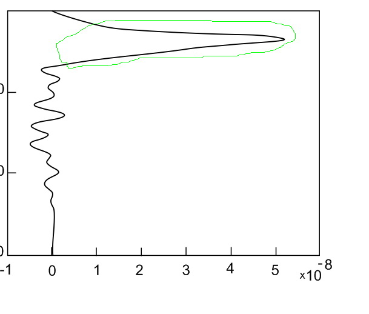
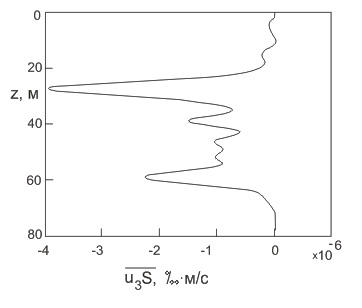

ВОПРОС / ОТВЕТ ДЛЯ НАЧИНАЮЩИХ
polzovatel-902 / 13.07.2010, 09:21/00:41
Форум:
Объясню на примере, чтоб было понятней... Открываю в кореле картинку (футболку с надписью) в формате JPG, мне нужно вытянуть из футболки надпись, т.е разъеденить файл... Говорят нужно формат изменить, еще что-то... Объясните, пожалуйста, что нужно сделать для этого...? Заранее спасибо.
Добрый день, столкнулась с одной проблемой, которая не укладывается у меня в голове совершенно. Почему-то линии в Corel стали нечеткими отображаться, в настройках пыталась порыться, ничего подходящего не нашла. Помогите пожалуйста разрешить проблему.
На рисунке выделен зеленым участок где как раз и эта катавасия. Рисовалось в 5 версии но при переводе в третью та же самая проблема
Сразу скажу что стоит вид расширенный (view > enhanced)

sungerl, 5 и 3 версии это не тоже самое что и 15 и 13!! Будьте внимательны.
Обновите драйвер видео карты.
Sancho, спасибо большое за помощь.
Обновление драйверов не помогло(
Статья горит, не знаю что и делать(
Замечания насчет версий учту.
я чёт не понял маленько. Каким образом связана сдача материала в печать или куда там с отображением кривых на экране?
Так на принтер он тоже с такими боками выдает, в этом и проблема.
Может я чего конечно не понял, но там точно кривая? не растр?
А вообще лично у меня на мониторе выглядит всё в пределах нормы.
да, кривая. я даже рядом просто провожу подобную кривую и тоже самое получается. уже даже на другом компьютере пробовали, все равно тоже самое.
Вот пример более худшего варианта.

могу кинуть сам кореловский вариант, может тогда проблема решиться
Да это нормально. Слишком пологие линии всегда так будут отображаться на мониторе покуда будет 72dpi. А что у вас принтером, это уж вам разбираться ибо мы тут не телепаты )). Принтер должен печатать 300dpi минимум. При таком разрешении, подобной пиксилизации не должно возникнуть.
извините, если вопрос тупой) но где эти 72dpi, где их на 300 поменять?
Страницы